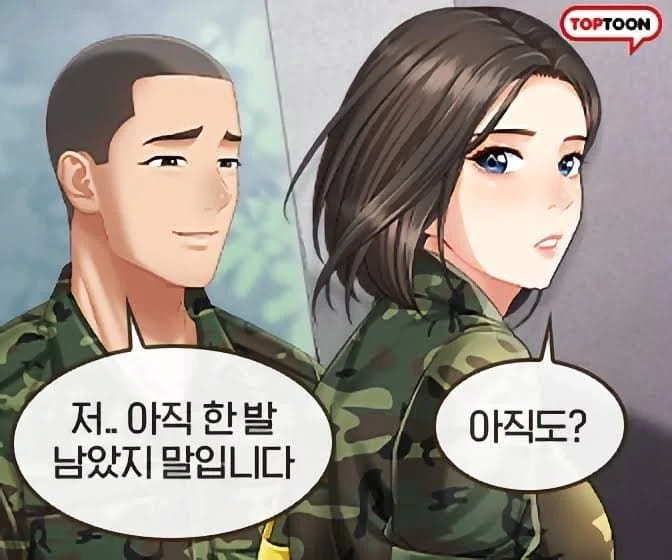
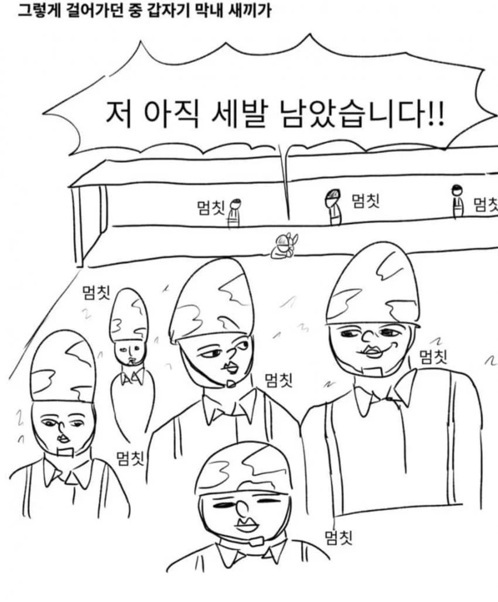

VS


VS

사격훈련때 다 쏘고 확인할때 격발하면서 1사로 이상무 차례로 외치는데 5사로인가 6사로 차례일때 탕 소리나서 중대장님 마이크로 쌍욕하는거 들음 ㅋㅋ
19군번 자대에서 사격할때
사수 바로 옆에 간부인 부사수,
사수 뒤에서 사격완료 깃발 드는 병사 부사수 둘 썼는데
사격끝내고 탄피받이 빼서 간부 부사수가 탄피를 실셈하는데 옆사로 노리쇠가 닫혀있는거.
야 그거 왜 닫혀있냐?
엥 그러게 ㅋㅋ...
총알이 남아있을수도 있긴 한데
어지간하면 청소 덜해서 후퇴를 덜했는갑다 했는데
안전검사하다가 한발 나감.
2m정도 앞 모래바닥에 퍽! 박힘.
사격장 전원 얼어붙었다가 사수 부사수 전부 다 중대장한테 한소리 들음
19군번이라 이러고 끝냈지 더 이전 형님들 세대였으면 죽도록 까였을듯...
사격할때 안나갈때까지 방아쇠 안당김? 탄이 어테 남아?
모르겠음;;
나도 이해 안가서서 물어보지도 않았음
중대장도 넌 니가 쏜 총알도 못세냐고 혼냈었음
사격장에서 사격끝나고 그자리서
'노리쇠 후퇴고정'~~'격발' 안전검사 안했어?
후퇴고정되어있는걸 전진, 격발, 이상무
노리쇠 2,3회 후퇴전진, 격발, 이상무
였는데,
이미 전진되어있으니 자연스레 생략한듯?
우리때는 사격통제관이 전체 사격끝난거 확인후 안전검사하고 고리풀고 사로에서 나왔는데 빼먹은거 같은데
대대 안에서 했던 사격이라
중대장이 확성기들고 통제했었음
훈련장 이런 개념이 아니고 영내에 만들어둔 6라인짜리 사로에서 했던거라 이것저것 야매였나보다
내 기억상으로는 일병 언저리때부터 코로나터져서 외부활동 못하게했을 때였을걸
원샷 투킬 두번하면 올킬쌉가능
표적지 회수하러 가는거보니, 영사 같은데 약실 확인이랑 격발 수 차례하고 회수가 순서인데 저게 말이 되나??
미필의 상상력임 ㅋㅋㅋㅋ
저 씹 저웹툰 해피엔딩이라 개짜증
사격 끝나면 표적지 뚜껑 닫으러 걸어갔던가?? 기억이 안나네 ㅋㅋ
그냥 재미로 봐라
일렬로 서 주시지 말입니다
알뜰함은 역시 막내 👍
총알이 부족함다
복면 ㅂㅁ
두명은 살려 보내준다!!
키이잉